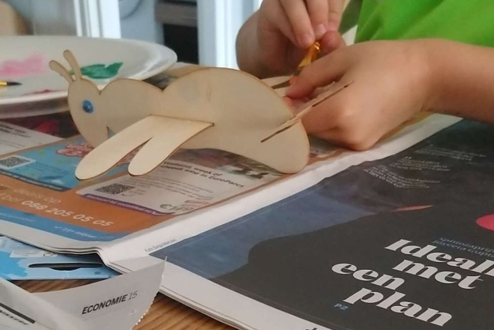
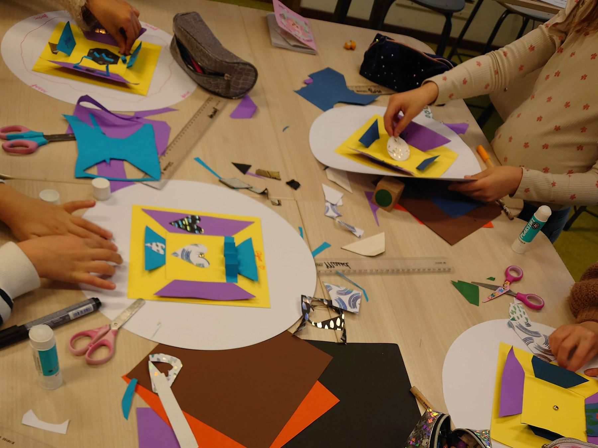
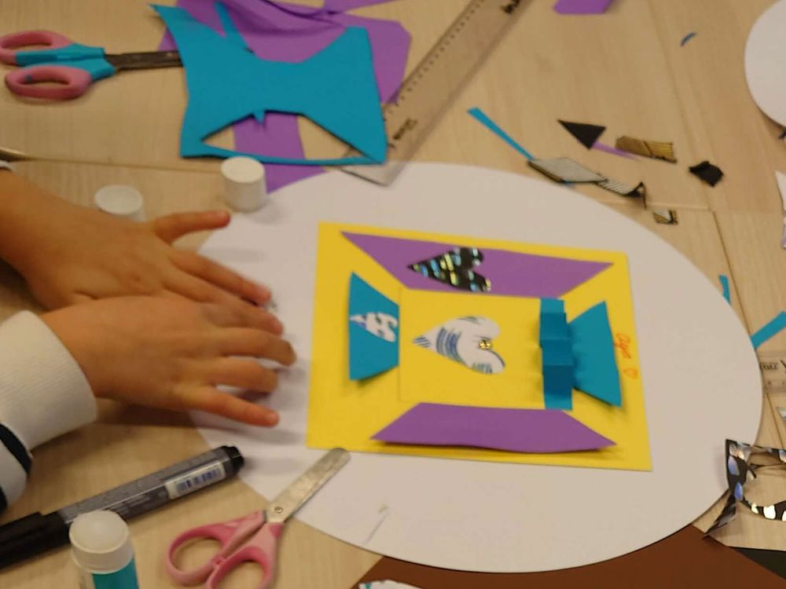
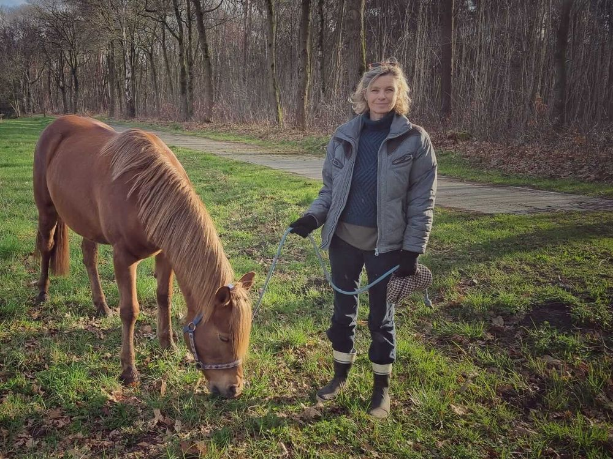
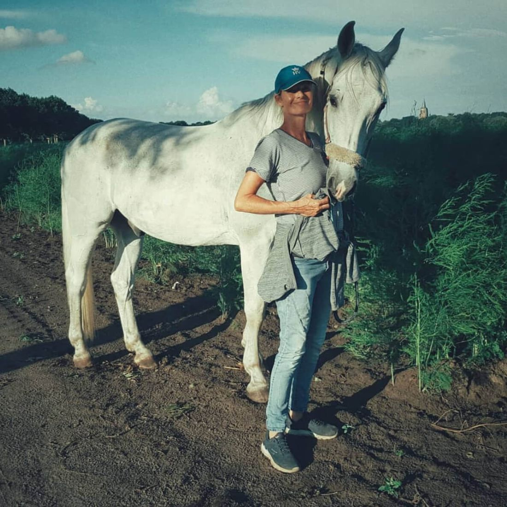
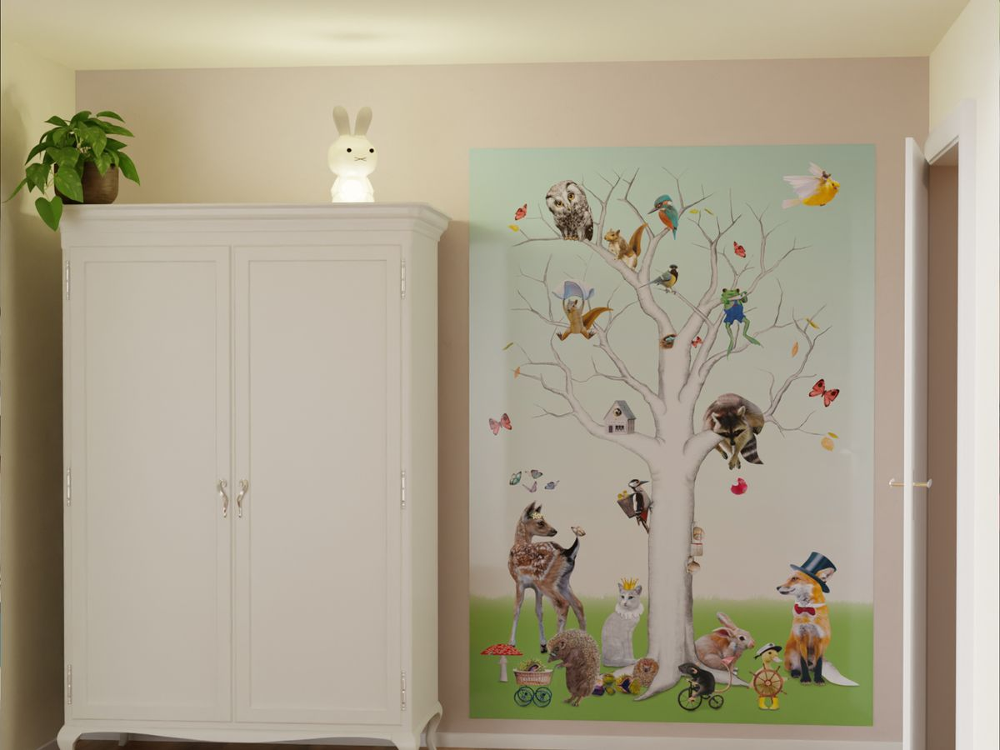

Gastouderopvang
Opvang aan huis in Bergen op Zoom. De contracten en de toeslag regelt u via gastouderbureau Just4kids.
Met kinderopvangtoeslagMeer info

Gastouderopvang in Bergen op Zoom, met 10 jaar ervaring en een hart voor kunst, knutselen en hoe een kind zich voelt.
Opvang aan huis voor uw kind, en daarnaast lessen en trainingen voor kinderen en scholen.

Opvang aan huis in Bergen op Zoom. De contracten en de toeslag regelt u via gastouderbureau Just4kids.

Kunst- en cultuurlessen en workshops voor basisscholen, met een opbouwende leerlijn.

Sociale vaardigheidstraining voor kinderen van 5 tot 12 jaar, in kleine groepjes of samen met paard Ginny.
SunnyKids werkt samen met gastouderbureau Just4kids. Zo heeft u recht op kinderopvangtoeslag van de Belastingdienst en zijn de verzekeringen goed geregeld.
Ik ben in 2014 begonnen als gastouder bij een gezin in Opijnen en werk nu met veel plezier in Bergen op Zoom.

Ginny helpt mij met de training sociale vaardigheden. Het is bijzonder om te zien hoeveel een kind kan leren door het omgaan met paarden. Ze leren emotionele vaardigheden zoals empathie, geduld, rust en duidelijkheid, maar ook balans en evenwicht.
Dit alles gebeurt zonder te rijden.

Ik schrijf kinderverhaaltjes voor Sticky Tales, met de diertjes van Sticky Tales als inspiratie. De verhaaltjes gaan over ons gevoelsleven en brengen gesprekken op gang tussen ouder en kind.
"Wat was spannend vandaag? Wat was leuk, of juist niet zo leuk, en waarom dan?"
Voor een museum in Dordrecht schreef ik verhaaltjes bij hun eigen diertjes uit oude schilderijen. Super trots op deze samenwerking.
"Blij en begrepen!"
Ik ben Carryke Manrho: gastouder, docent kunsteducatie, schrijver en trainer in sociale vaardigheden. Ik heb 40 jaar ervaring in de kunstzinnige educatie en het begeleiden van kinderen.
Ik geef kunst- en cultuurlessen in het primair onderwijs en ben in de zomer examinator bij de staatsexamens. Met mijn opleidingen tot jeugd- en gezinscoach en beeldend therapeut geef ik trainingen aan kinderen in het basisonderwijs, met en zonder paard.
Op zoek naar opvang, een workshop voor uw school of een training voor uw kind? Bel of stuur een bericht, dan vertel ik u er graag meer over.
U kunt Carryke direct bellen of mailen voor een kennismaking of een vraag.